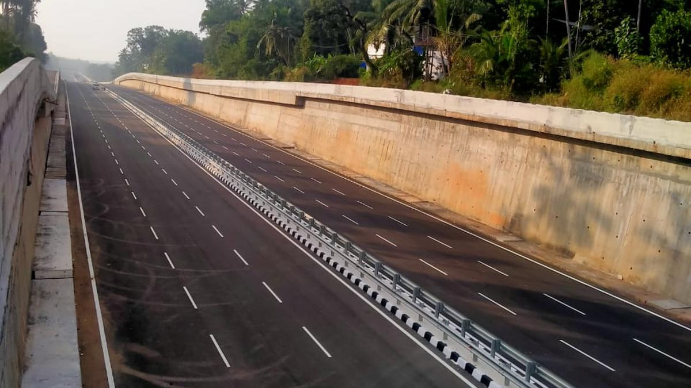
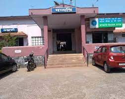
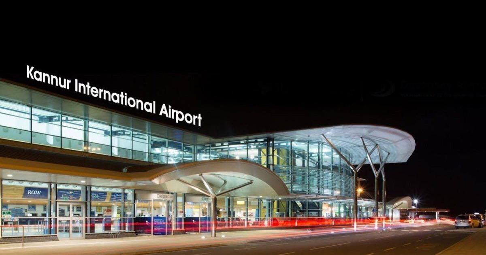

How to reach Mahe
Mahe, a coastal town is easily found on the map. It can be accessed mainly by:View Larger Map
Road
Mahe is situated on the NH-66 highway, more commonly known as the Panvel-Goa highway. It is situated between Kannur and Kozhikode districts.
Daily buses from Kannur to Kozhikode pass through this sleepy town.

Thalassery-Mahe Bypass
Rail
The Mahe Railway Station serves as the transport hub of Mahe. Daily local trains make a stop here.
In addition, buses and auto-rickshaws traversing through the town and its suburbs are centered near the station complex.

Mahe Railway Station
Air
Kannur International Airport, the nearest airport, is about 40 km from Mahe. The airport has a taxi service that can ferry you to the airport.
The other nearest airport, Calicut International Airport, is situated 90 km away.

Kannur International Airport